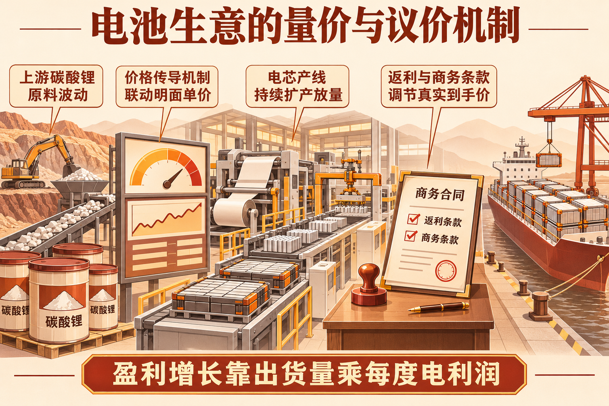
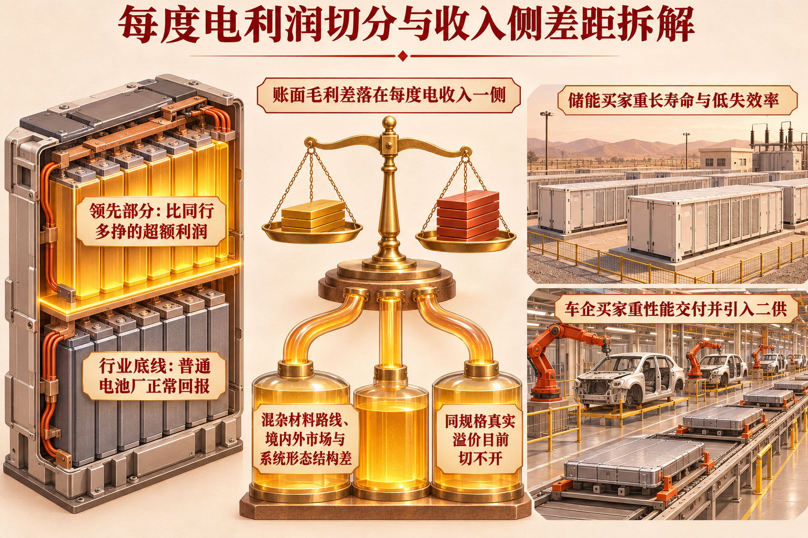
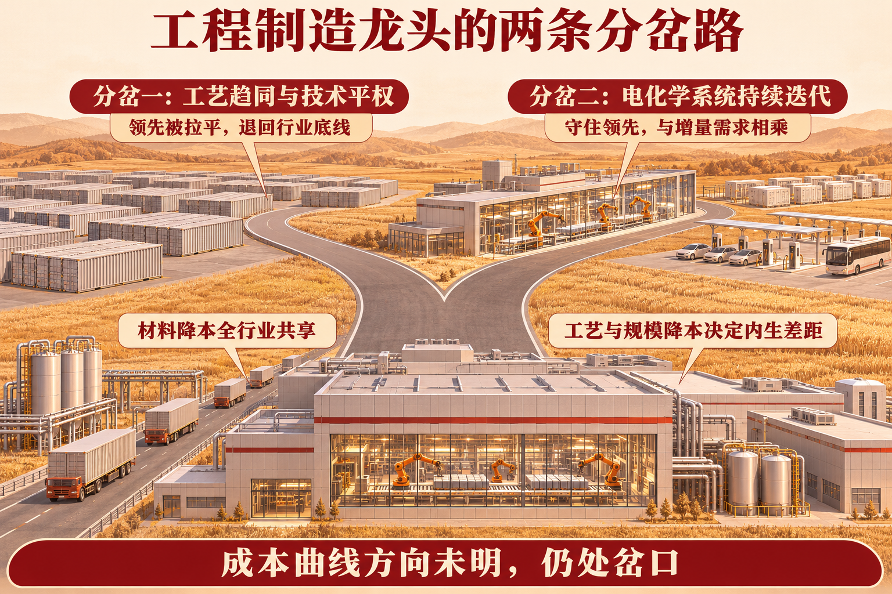

电池这门生意怎么运作
销量扩张驱动利润，碳酸锂联动决定售价中枢，返利与商务条款决定真实议价
读懂宁德时代的财报与估值之前，先看清这门生意的底层脾气。动力与储能电池按电量计量，钱是从出货量乘以每度电利润挣出来的，不是靠终端提价。

- 量价背离是十年的常态。宁德电池总销量从 2016 年的 6.81 GWh 爬到 2025 年的 661 GWh，但每 GWh 收入从 2022 年高点 11.37 亿元跌到 2025 年的 6.41 亿元。收入和利润往上走，靠的是出货量翻倍，每度电的价减成本反而一直在下移。
- 售价跟着原料走，不等于利润随波逐流。宁德在 2026-03-09 投资者关系记录中提到：「自上一轮碳酸锂价格周期以来，公司与下游客户建立并完善了价格传导机制，目前运行良好。」这意味着售价按碳酸锂联动调整，但联动公式并未对外披露。
- 返利与商务条款才是隐藏的议价层。同一份记录提到：「若无极端行情，现有返利政策及商务条款将保持稳定」按原话读，在不含极端行情的前提下，返利与商务条款构成明面单价之外的调节层，只是返利规模同样未披露。单价下行对固定资产周转率的影响，拆解见财报之根·占款回吐与周转率。
口径备忘：每 GWh 收入构成与价格联动未披露项
每 GWh 收入口径：下表中的每 GWh 收入由全公司营业收入除以电池总销量计算，分子含电池材料及回收等非电池业务收入，仅作单价下移的量级定位。
未披露项：碳酸锂价格传导机制的具体公式、调价周期及客户返利规模，均未在公开财报或说明会中披露。
| 年 | 销量（GWh） | 营业收入（亿元） | 每 GWh 收入（亿元/GWh） | 归母净利润（亿元） |
|---|---|---|---|---|
| 2016 | 6.81 | 148.79 | 21.85 | 28.52 |
| 2017 | 11.85 | 199.97 | 16.87 | 38.78 |
| 2018 | 21.31 | 296.11 | 13.90 | 33.87 |
| 2019 | 40.96 | 457.88 | 11.18 | 45.60 |
| 2020 | 46.84 | 503.19 | 10.74 | 55.83 |
| 2021 | 133.41 | 1,303.56 | 9.77 | 159.31 |
| 2022 | 289.00 | 3,285.94 | 11.37 | 307.29 |
| 2023 | 390.00 | 4,009.17 | 10.28 | 441.21 |
| 2024 | 475.00 | 3,620.13 | 7.62 | 507.45 |
| 2025 | 661.00 | 4,237.02 | 6.41 | 722.01 |
销量为年报或招股书披露的总销量；每 GWh 收入 ＝ 营业收入 ÷ 销量，营业收入含全部业务。
十年间销量从 6.81 GWh 扩至 661 GWh，每 GWh 收入则自 2022 年 11.37 亿元降至 2025 年 6.41 亿元，利润长大靠的是放量而非提价。
谁在场内分钱
全行业同台竞争，盈利分层却极为悬殊，国内份额稳在高位而二供持续存在
电池产业链上，钱从不按出货量平均分。2025 年全公司毛利率，宁德做到 26.27%，亿纬锂能只有 16.17%，国轩高科 16.17%，欣旺达 13.94%，头部与二线之间横着十个百分点以上的落差。
- 换到每度电看，差距更直观。剥掉非经营项目后的经营每度电利润，2025 年宁德为 76.62 元/度，亿纬锂能为 24.36 元/度。研究者把亿纬这一水位定为“行业底线”主口径，也就是没有明显优势的电池厂每度电刚好拿到正常回报的利润。
- 份额稳在高位，但二供早已拿到实单。按动力电池产业创新联盟口径，宁德国内装车份额 2025 年为 43.42%，2026 年前九个月为 44.20%，眼下并未滑落。但客户并非没有替代选择，宁德在 2026-03-09 投资者关系记录中称：「2025年在市场需求强劲的大背景下，公司因短期产能不足导致部分订单外溢。」原话归因于短期产能不足而非价格，同时也证实二供在真实市场里拿到过订单。
- 车企自研的隐忧，须与眼下事实分开。研究者个人认为，车企推进自研电池、宁德当前份额偏高，后续让出部分份额属于正常，且消费者端未必明显感知电池品牌差异。不过研究者自注这属于个人猜测、不基于事实；现有数据缺少车企自研电池的装机与采购统计，而 2026 年前九个月国内份额 44.20% 不低于 2025 年，与份额眼下未掉相容。季度毛利差的收窄序列见财报之根·毛利差收窄。
口径备忘：经营每度电定义、底线样本与自研边界
经营每度电与样本限制：经营每度电等于扣非归母净利润减去非经营项目后除以电池总销量。上市同行中只有亿纬能算出同口径数值，且分子混有消费电池与电池材料利润，其自身近三期亦在较宽区间摆动；国轩算不出同口径，欣旺达在表块中同样为含消费电池的混合比值，仅作对照。
份额与自研边界：联盟国内装车份额取自媒体转述的行业统计；车企自研电池对宁德份额与溢价的冲击缺少量化证据，相关担忧属研究者个人看法，未据此改动基准情景与立场。
| 公司 | 全公司毛利率·2025（%） | 动力毛利率·2025（%） | 储能毛利率·2025（%） | 经营每度电·2025（元/度） | 质保余额占收入·2025（%） |
|---|---|---|---|---|---|
| 宁德时代 | 26.27 | 23.84 | 26.71 | 76.62 | 12.09 |
| 亿纬锂能 | 16.17 | 15.50 | 12.28 | 24.36 | — |
| 国轩高科 | 16.17 | 14.39 | 20.75 | — | 1.57 |
| 欣旺达 | 13.94 | 4.86 | 23.34 | 24.32 | 2.85 |
2025 年口径；亿纬与欣旺达的经营每度电是混合比值（分子含消费电池等其他业务利润），欣旺达只作对照；国轩无经营每度电；亿纬质保余额未披露。
2025 年宁德毛利率 26.27% 与经营每度电 76.62 元均大幅高于同行；亿纬与欣旺达的经营每度电分子混有消费电池利润，仅亿纬用作行业底线主口径 24.36 元。
宁德的生意模式：领先挣在哪
每度电利润拆成底线与领先两截，动力毛利差落在收入一侧，成因仍待拆解
看清宁德的赚钱机器，只需把每度电经营利润劈成两截：一截是普通电池厂维持正常回报的“行业底线”，相当于铁饭碗；另一截是宁德多挣出来的“领先”，相当于超额肉，未来竞争要啃的正是这一截。2025 年宁德经营每度电 76.62 元，减去行业底线 24.36 元，领先幅度是 52.26 元/度。

- 动力每度电毛利跟着行业一起降，但差距没有消失。2023 年到 2025 年，宁德动力电池每度电毛利从 197.94 元降到 139.45 元，亿纬同期从 122.70 元降到 79.93 元。单价下行把两家一起往下拽，宁德多挣的那一截仍在。
- 反直觉的是，差距全部落在收入一侧。2025 年亿纬动力每度电成本 435.70 元，账面上反而低于宁德的 445.59 元；宁德多挣的每度电毛利，完全来自更高的每度电收入——宁德为 585.04 元，亿纬对应读数列在下表。但这只是全业务混合比值，成本偏高不代表同规格制造成本被追平，收入偏高也不能直接算成同规格品牌溢价。
- 收入里的结构差与同规格溢价，眼下切不开。每度电收入差同时混着三元与磷酸铁锂、境外与境内、电池系统与电芯的构成差，以及同一款产品上车企愿不愿意多掏钱的真实溢价。靠年报汇总数切不开这两块，同车型采购价和同标段报价也缺一手数，研究者已将这一问题列为下一步专门核查的专题。
- 两类买家各买各的账，三类壁垒分不开。储能业主买长寿命与低失效率，管理层在 2024-10-18 记录中称：「储能电池对产品的安全性、寿命等要求更高」；2025-10-20 又提到：「单体失效率要达到PPB（十亿分之一）的水平」，并称：「储能系统的证实和证伪周期非常长，长期而言，按照承诺交付的储能系统会越来越能够获得客户的认可，最终赢得市场。」这三句属管理层自述，与长周期验证形成迁移成本相容，但缺少第三方留存率数据。动力端车企看重能量密度、快充与大批量交付安全，同时引入二供制衡；领先究竟来自成本、产品还是规模，现有披露分不开，对外技术授权也在有偿输出部分技术。这套领先未来要守住几成才够现价，见估值之茎·把价格要求切成四层。
口径备忘：铁饭碗类比、混合比值与未切开的收入差
类比说明：将每度电利润比作“铁饭碗加超额肉”仅为便于理解的通俗讲法，无实证效力。
混合比值限制：表块中的每度电收入、成本与毛利均为分产品汇总数除以销量，混杂材料路线、境内外市场与系统电芯形态差异，不能直接当成同规格产品的成本或售价对比。宁德 2023 年为原报口径，质保费用尚在销售费用中。
待查缺口：两家动力电池毛利差落于收入一侧，结构差与同规格溢价各自占比目前无法从公开披露切分，留待专门核查。
| 公司 | 业务 | 年 | 每度电收入（元/度） | 每度电成本（元/度） | 每度电毛利（元/度） |
|---|---|---|---|---|---|
| 宁德时代 | 动力电池 | 2023A | 888.64 | 690.70 | 197.94 |
| 宁德时代 | 动力电池 | 2024A | 664.15 | 505.15 | 159.00 |
| 宁德时代 | 动力电池 | 2025A | 585.04 | 445.59 | 139.45 |
| 宁德时代 | 储能电池 | 2023A | 868.12 | 661.56 | 206.56 |
| 宁德时代 | 储能电池 | 2024A | 616.03 | 450.69 | 165.34 |
| 宁德时代 | 储能电池 | 2025A | 516.03 | 378.21 | 137.82 |
| 亿纬锂能 | 动力电池 | 2023A | 854.13 | 731.42 | 122.70 |
| 亿纬锂能 | 动力电池 | 2024A | 632.79 | 542.89 | 89.90 |
| 亿纬锂能 | 动力电池 | 2025A | 515.62 | 435.70 | 79.93 |
| 亿纬锂能 | 储能电池 | 2023A | 621.54 | 515.66 | 105.88 |
| 亿纬锂能 | 储能电池 | 2024A | 377.14 | 321.61 | 55.53 |
| 亿纬锂能 | 储能电池 | 2025A | 344.00 | 301.77 | 42.23 |
每度电 ＝ 分产品收入或成本 ÷ 销量 × 100；宁德 2023 年为原报口径（质保费用在销售费用）。
三年间宁德与亿纬动力每度电毛利同向下降，但差距未收口；2025 年宁德每度电成本 445.59 元高于亿纬 435.70 元，差距落在收入一侧，结构差与同规格溢价切不开。
和牧原比：同一条路上的岔口
同属工程管理与资本开支驱动的制造龙头，但商品属性、需求空间与成本曲线仍在分岔
把电池龙头和生猪养殖龙头牧原放一起，不是把电池和猪肉画等号，而是借牧原立起制造业的同一个考题：靠工程管理与重资本开支拉开的成本差，一旦行业技术平权，超额利润会不会归零。

- 底色相似，但生意所处的阶段不同。两家同是重资产工程制造，共同的天敌都是全行业工艺趋同。不同的是，在研究者对牧原的判断里，猪肉高度同质、行业总量见顶、成本差已缩进统计口径噪音；宁德卖的是持续迭代的电化学工程系统，中档需求下 2035 年销量还有 4.1 倍空间，当前 52.26 元/度的经营每度电领先也远大于口径误差。
- 颠覆性路线眼下尚未落地。宁德在 2026-03-09 投资者关系记录中称：「固态电池仍有部分工程问题尚待解决，产业化和商业化落地还需要一些时间。」全固态距离量产尚有时滞，旧产线不会立刻报废。
- 材料降本全行业共享，工艺降本才是真功夫。宁德在 2025-03-14 投资者关系记录中提到：「目前来看，材料环节整体仍处于供大于求的状态。公司通过不断创新进行降本增效，并积极协助产业链内企业进行降本，随着规模效应的释放，成本仍有一定下降空间。」外生材料降本与内生工艺降本各占多少，财报看不到。
- 真正要盯的岔口在成本曲线，但眼下还看不出往哪边转。2024 年到 2025 年，宁德单位营业成本变化 −18.0%，亿纬变化 −11.7%；2025 年上半年至 2026 年上半年，宁德推算变化 −1.8%，两期同口径下亿纬变化 3.1%。两段里宁德都不比亿纬慢，但后一段宁德销量属概数推算、亿纬出货口径未核，仅凭这两段说不出成本曲线往哪边转，既不能判壁垒已经拉开，也不能断定宁德滑向平权终点。毛利率被拉平后的压测见叙事之果·毛利率会不会被拉平。
口径备忘：跨行业类比边界与上半年成本变动口径缺口
类比边界：与牧原的对照只用于提出“壁垒会不会收敛”这一问题，属跨行业思考框架、无实证效力；牧原一侧判断取自研究者对牧原的既有研究。两边成本差单位与口径完全不同，只比变化方向不比绝对大小。
上半年成本变动口径缺口：宁德 2026 年上半年单位营业成本变动 −1.8% 的销量分母由业绩说明会“超过”“接近”类口语推算，误差在正负五个百分点以上；亿纬同口径变动 3.1% 两期均按 2026 年半年报重分类后比较表计算，假设出货口径未随重分类变化，原文未披露该项，均须等 2026 年报正式核实。
研究前提与认知标记
把全篇承重的九块地基按推翻难度贴标，并钉死每一条的推翻开关
全篇承重前提按推翻难度分成三类：制度与产业约束来自已立法的税制与制造硬约束，最难改变；历史归纳来自过往十年或同行样本总结，换环境可能失效；研究假设是研究者主动押下的关键判断，也是全篇最需要盯紧的脆弱点。
消费税自 2026 年 9 月起按低档开征、2027 年 9 月起上调至高档；财政部与税务总局公告明确：「自2026年4月1日起至2026年12月31日，将电池产品的增值税出口退税率由9%下调至6%；2027年1月1日起，取消电池产品增值税出口退税。」这是全行业共同面对的制度约束。
现有产线接近满负荷时，销量翻倍必须靠前置资本开支铺路，旧产线到期也必须重置更新，这是重资产制造的产业硬约束。
回看 2016 年至 2025 年现金流量表，宁德靠应付账款与客户预付形成深度负营运资本，使偏宽口径的利润变现金比例超过一；这属扩产期强势链主环境下的归纳，环境变了可能松动。
研究者选定亿纬锂能 2025 年经营每度电 24.36 元作行业底线主口径，与理论资本回报落在窄带内，但目前只有一家同行的混合样本。
基准路径取国际能源署既定政策情景下的动力需求与行业机构 2035 年储能预测为中档，并假设宁德守住 2025 年全球份额；研究者整体对需求偏乐观，但这属研究者看法。
这是全篇最核心的胜负假设：最可能区间建立在宁德十年后仍保留约六成每度电领先的基础上，而不是滑向只挣底线的普通制造厂。
新税全行业同征，管理层表态与客户分担，加上欧洲本地产能可避开出口退税取消，研究者据此设定宁德长期自扛一半税负。
宁德无多年保底分红承诺，在建产能庞大且账面现金十年连涨，研究者从严设定超额现金永远不分，只按税后利息计入终局利润。
海外建厂每 GWh 投资远高于国内账面设备原值，若未来产能重置大头落在海外高造价上，资本开支会吃掉大块账面利润。研究者将重审线钉在 0.85，高于此线但低于对照线时回报已低于门槛。
| 常见误判 | 更贴近生意的读法 | 对应哪一节 |
|---|---|---|
| 把较高的隐含回报当成市场白送便宜，或因担心利空把基准利润一压再压 | 现价里的额外回报对应头顶悬着的六条或有利空，基准数不重复打折，把利空拆成独立破线开关逐条等信号 | 叙事之果·最强多空、本节前提卡 |
| 把“毛利率掉到低位”和“净利率守在现有水位”混为一谈 | 宁德 2025 年扣非净利率本就是 15.22%，三费加研发已占 8.86%，一旦电池毛利率滑向同行低位，净利率会直接掉进个位数 | 叙事之果·毛利率压测 |
| 以为全球电池需求翻几倍，龙头就能稳稳跑赢回报门槛 | 销量与每度电壁垒是相乘而非相加，一旦领先被拉平只挣底线，需求就算翻数倍也跑不赢门槛 | 叙事之果·胜负手 |
| 以为 2026 年毛利率下滑主要是储能占比变大或新税压出来的 | 上半年分产品拆账显示结构效应为 0.26 个百分点、组内效应为 −1.35 个百分点，下滑出在同类产品内部；消费税不进毛利率，退税下调上限也远不够解释降幅 | 财报之根·毛利差、两项新税 |
| 以为把行业底线调低十几元，终局利润就会凭空少掉几百亿 | 每度电总利润由底线与领先加总而成，底线压低时领先同步加回；即便把底线换成同行公告投资口径，中枢格终局变化也仅为 −156.04 亿元 | 估值之茎·敏感度 |
本表五条来自研究过程中出现过的直觉，并非公开资料里的市场观点。
复查节点
核心检验窗口：2027 年三至四月发布的 2026 年报，集中核验分产品毛利率、单价、全年销量、分基地在建投资、质保变动表及满季新税转嫁实况。
月度跟踪：每月中旬跟进动力电池产业创新联盟国内装车份额；全部六条潜在看空的破线阈值与动作见叙事之果·什么会推翻。